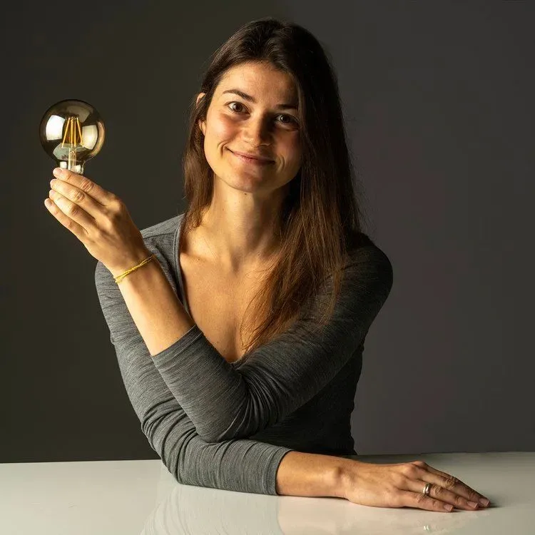

The person behind Soul Hug
Soul Hug grew from my love of creative expression. It's an invitation to slow down, make things freely, and be curious about yourself, without needing to achieve anything.
I guide creative workshops in Utrecht, with room to explore in your own way. Some bring art and gentle yoga together; I also teach weekly yoga at local studios.

Through simple materials, colour, and imagery, there's room to explore things that can be difficult to put into words. This spirit of creative exploration is at the heart of Soul Hug.
Growing up in Belgium, I explored movement through karate and later dance. I discovered yoga as a teenager, returning to it in 2018 when I was looking for more softness, slowness, and authenticity.
In 2022, I completed a 200-hour Hatha Yoga Teacher training at Arhanta Yoga Ashram. My teaching invites you to pay attention to your breath and body, finding both steadiness and comfort in your practice.
I hope to offer a welcoming place to pause, try something new, and connect with others. You don't need a particular skill, a finished artwork, or the right words.
I'm still finding my own way, too. Soul Hug is a way of sharing that exploration, with patience, curiosity, and kindness.
Big hug,
Valérie